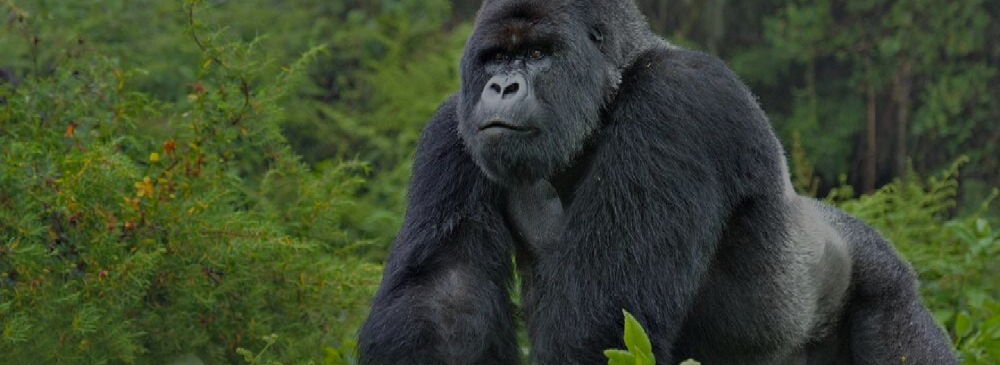

ORIGINE: ANIMALE TERRESTRE
GORILLA
Il gorilla è un mammifero terrestre che vive nelle foreste di pianura dell’Africa equatoriale.
PERCHÈ È IN VIA DI ESTINZIONE?
Il gorilla è un animale cacciato in Africa per la sua carne, che viene ritenuta costosa, inoltre anche la deforestazione e la diminuzione degli Habitat ideali per questi animali fanno sì che il gorilla sia in forte pericolo e sempre meno presente.
- Dimensioni: è di grandi dimensioni, raggiunge i 160 kg di peso e i 150/180 cm di altezza.
- Vita media: 35/40 anni.
- Colore: manto scuro e privo di peli sul viso.
- Alimentazione: germogli, bambù e frutta.
- Stile di vita: non è un animale solitario, anzi la maggior parte delle volte si muove in branco.
- Curiosità: ha grandi mani spalle ampie e braccia lunghe che gli permettono di essere estremamente forte.